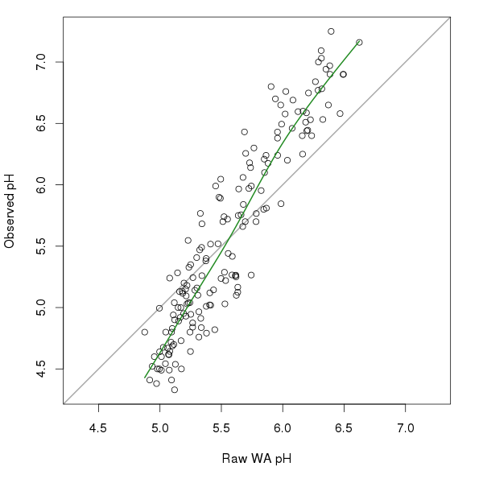
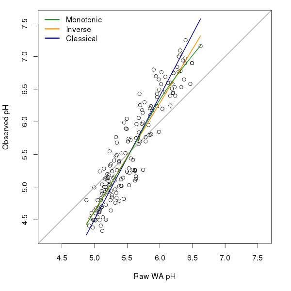

Monotonic deshrinking in weighted averaging models
Posted in
Tagged
analogue deshrinking Palaeoecology Palaeolimnology R Statistics transfer function weighted averaging
Weighted averaging regression and calibration is the most widely used method for developing a palaeolimnological transfer function. Such models are used to reconstruct properties of the past lake environment such as pH, total phosphorus, and water temperature with, it has to be said, varying degrees of success and usefulness.
In simple weighted averaging (WA) there is little to specify other than the predictors (the species or other proxy data) and the response (the thing you wish to build a model for and predict). The one user-specified option in a simple WA is the type of deshrinking to use.
Why deshrinking?
Well, in a WA model, averages of the response are effectively taken twice; i) first when the WA optima of the response variable for each taxon is computed, and ii) a second time when a weighted average of the optima for the species in each sample is computed to give the raw WA estimate of the response for each sample. Note that the weights here are the values in the predictor data matrix; usually these are species or taxon abundances (often the in the form of proportions or percentages).
The effect of taking averages twice is to shrink the range of possible estimates from a WA model. This can be illustrated using some of the tools from analogue. First load the package and the SWAP example data set
## load analogue...
require(analogue)
## ...and some example data
data(swapdiat)
data(swappH)Next, compute the WA pH optima for each diatom taxon
opt <- optima(swapdiat, swappH) ## compute WA optimaThe final step is to use some simple matrix algebra to give the raw WA estimates of the pH for each SWAP sample (site). (Note that the swapdiat object needs to be cast as a matrix for the matrix algebra step, which we do using data.matrix())
diat <- data.matrix(swapdiat) ## convert to a matrix
pred <- ((diat %*% opt) / rowSums(diat))[, 1] ## compute raw WA estimatesI won’t go into the details of the last step; it is a reasonably optimised bit of R code to compute a weighted average of the pH optima for each species in a given sample. (The first part of the code involving the matrix multiplication operator %*% forms a weighted sum of the pH optima, with weights given by the abundances of the diatom taxa.)
From the above we can see that there are three types of pH value:
- the observed pH in
swappH - the pH optima for each taxon in
opt, and - the WA estimate of pH for each site in
pred.
A quick look at the range of the pH values for each stage shows the shrinkage problem resulting from averaging
r.obs <- range(swappH)
r.opt <- range(opt)
r.wa <- range(pred)> rbind(r.obs, r.opt, r.wa)
[,1] [,2]
r.obs 4.330000 7.25000
r.opt 4.500000 7.25000
r.wa 4.875662 6.62395
About a whole pH unit has been lost due to the repeated taking of averages. Clearly, this is a problem for WA models, one that is addressed through the using a deshrinking step.
Traditionally there were two approaches to deshrinking; inverse and classical deshrinking. In the inverse approach, a model of the form
\[ \mathrm{observed} = \beta_0 + \beta_1\mathrm{wa\_{est}} + \varepsilon \]
which is a simple linear regression with the observed values as the response and the raw WA estimates as the predictor. The classical deshrinking approach flips the role of the response and the predictor such the model is
\[ \mathrm{wa_{est}} = \beta_0 + \beta_1\mathrm{observed} + \varepsilon \]
Expanded WA estimates are achieved by taking the usual predicted values from the inverse model or by inverting the classical model equation.
Both the inverse and classical deshrinking approaches are linear. The idea of using a non-linear deshrinking step has long been proposed in the literature, all the way back to ter Braak and Juggins (1993) and Marchetto (1994), but in practice the idea has not caught on, presumably because of a lack of widely-available and user-friendly software that implement the technique.
In the non-linear deshrinking approach the following model is use, which is very similar to that of the inverse approach
\[ \mathrm{observed} = \beta_0 + f_1(\mathrm{wa_{est}}) + \varepsilon \]
where \( f_1() \) is a smooth, monotonic function. The monotonicity constraint is important; as the raw WA estimate increases in value the expanded estimate should also increase. In other words we don’t allow for the expanded estimate to get smaller (bigger) as the raw WA estimate gets bigger (smaller).
New code in analogue implements this monotonic deshrinking idea. The seed of the actual implementation used here is murky.1 Briefly, both analogue and rioja fit a cubic regression spline via s(wa.est, bs = "cr"), but as the standard gam() function won’t constrain the smooth to be monotonic some additional steps have to be performed, and we end up fitting a penalised regression with monotonicity constraints invoked. The code to show how to do this in mgcv was sitting there in one of Simon’s man pages!
So what does this look like? The figure below shows the raw WA pH estimates and the observed pH values for the SWAP diatom data we looked at earlier. The thick green line fitted through the points is the monotonic cubic regression spline fitted via mgcv.

The monotonic deshrinking and the plot were produced using
## do the monotonic deshrinking
mono <- deshrink(swappH, pred, type = "monotonic")$env
## need to get things in increasing order for plotting
ord <- order(pred)
## draw the data and the fitted monotonic cubic regression spline
plot(pred, swappH, asp = 1, ylim = r.obs, xlim = r.obs,
panel.first = abline(0, 1, col = "darkgrey", lwd = 2),
ylab = "Observed pH", xlab = "Raw WA pH")
lines(mono[ord] ~ pred[ord], type = "l", col = "forestgreen", lwd = 2)In this example, there appears to be two relationships between the raw WA estimates and the observed pH; a steeper one up to pH 6.0 and a somewhat less strong one thereafter. Figure 2 shows a comparison of the three deshrinking methods discussed above.

The inverse and classicial deshrinking values were computed using
inv <- deshrink(swappH, pred, type = "inverse")$env
cla <- deshrink(swappH, pred, type = "classical")$envThe figure was produced using
ylim <- range(r.obs, r.wa, mono, inv, cla)
plot(pred, swappH, asp = 1, ylim = ylim, xlim = ylim,
panel.first = abline(0, 1, col = "darkgrey", lwd = 2),
ylab = "Observed pH", xlab = "Raw WA pH")
ord <- order(pred)
lines(inv[ord] ~ pred[ord], type = "l", col = "darkorange", lwd = 2)
lines(cla[ord] ~ pred[ord], type = "l", col = "navyblue", lwd = 2)
lines(mono[ord] ~ pred[ord], type = "l", col = "forestgreen", lwd = 2)
legend("topleft", legend = c("Monotonic", "Inverse", "Classical"),
col = c("forestgreen","darkorange","navyblue"),
lwd = 3, bty = "n")The monotonic deshrinking curve is quite similar to the inverse deshrinking one; this is not surprising as monotonic deshrinking is a local version of the inverse deshrinking model. The two curves only deviate from one another above pH 5.5.
There does seem to be a slight improvement in WA model performance when using monotonic deshrinking over the other deshrinking techniques, for the SWAP data set at least. Well, that was the conclusion of the paper John and I have been working on for a special issue of JoPL. But you’ll have to wait for the paper (and accompanying blog post) for the full details when it is accepted and in press.
##Notes 1 Steve Juggins discussed the idea briefly in a presentation he gave at UCL a number of years ago and I had at the back of my mind been mulling how to do this in R without having code the entire thing(!) myself. John Birks recently suggested that I use monotonic deshrinking in a comparison of transfer function methods we were doing for a special issue of the Journal of Paleolimnology (JoPL). It turns out that Richard Telford, a colleague of John’s, had discussed this with both John and Steve too including the implementation used in analogue and, as it turned out, also in Steve’s rioja R package. It seems Steve and I implemented almost the same idea, independently; me after I’d been scouring Simon Wood’s exceedingly useful man pages for his mgcv package trying to find out how to do something with gam() to analyse time series data.
##References
- Marchetto (1994; Journal of Paleolimnology 12, 155–162)
- ter Braak & Juggins (1993; Hydrobiologia, 269/270, 485–502)